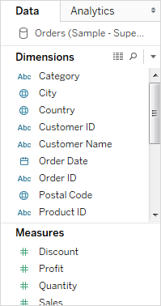

Different ways to start building a view
Every time you drag a field into the view or onto a shelf, you are asking a question about that data. The question will vary depending on where you drag various fields, the types of field, and the order in which you drag fields into the view.
For every question you ask, the view changes to represent the answer visually - with marks (shapes, text, hierarchies, table structures, axes, color).
In the worksheet, the columns from your data source are shown as fields on the left side in the Data pane. The Data pane contains a variety of different kinds of fields; for now the most important ones are dimensions and measures.

Dimensions typically hold categorical data such as product types and dates, while measures hold numeric data such as sales and profit.
When you build a view, you add fields from the Data pane. You can do this in different ways. For example:
- Drag fields from the Data pane and drop them onto the cards and shelves that are part of every Workbench worksheet.
Dimensions typically hold categorical data such as product types and dates, while measures hold numeric data such as sales and profit.
When you build a view, you add fields from the Data pane. You can do this in different ways. For example:
- Drag fields from the Data pane and drop them onto the cards and shelves that are part of every Workbench worksheet.
- Double-click one or more fields in the Data pane.
- Select one or more fields in the Data pane and then choose a chart type from Show Me, which identifies the chart types that are appropriate for the fields you selected.
Note: You can save your work at any time. To save a workbook, select File > Save As.
Created with the Personal Edition of HelpNDoc: Free help authoring tool